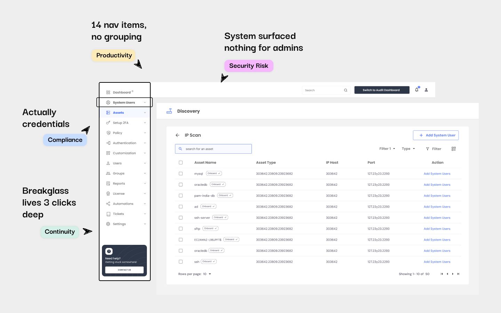

How I stopped a feature-complete security product from losing enterprise deals at the POC, by fixing the structure, not the screens.
Feature-complete on paper. Admins got lost in the first hour of a POC, so deals stalled.
The product had vaulting, session recording, access policies, discovery and MFA. On paper it competed with CyberArk and Delinea.
Then a prospect's admin opened it: 14 ungrouped nav items, workflows split across sections, failures that happened quietly. Our own SEs sometimes asked me where features were.

Next: how I found the real problem ↓
Before touching a screen, I audited 10 real admin scenarios. 140 issues traced back to 4 root causes.
The instinct was to redesign the worst screens. I pushed back for two weeks. Scenarios came from CS call recordings and support tickets: day-one onboarding, break glass during a Sev 1, rotating 200+ credentials, the audit review before a compliance call.
14 flat nav items. You had to know the internal object model to find anything.
New admins spent their first week translating the interface.
JIT, approvals and break glass were missing or scattered.
Errors weren't surfaced. Admins couldn't tell what broke.
The two deal-breakers: day-one onboarding (a new admin couldn't get to a working session in under 30 minutes without calling support) and break-glass elevation during a Sev 1 (the flow required knowledge of 3 separate sections that didn't surface together). Every other issue compounded from these two.
Next: deciding what to build ↓
I replaced the RICE vs Kano debate with one yes/no question. A big slice of the backlog was deferred in two days.
Does this directly strengthen one of the five deal-breakers?
three sprints in, the PM called it the most useful prioritization tool we'd used.
Next: what we actually changed ↓
Three structural decisions: nav by intent, work that stays inside the resource, onboarding with checkpoints.
The old nav was organised by database object: System Users, Groups, Certificates, Policies. The new one is organised by what the admin is trying to do. Break glass lives under Security Ops, findable on day one without the docs.
Next: what it moved ↓
in new PAM sales the quarter after release. Deals stalled at POC started closing.
In security products, usability is a security control.
Every decision after was implementing conclusions we'd reached together.
RICE and Kano failed because the team used them to avoid talking about values.
Migrating customers skipped onboarding stages. A persona is incomplete without knowing what they're migrating away from.